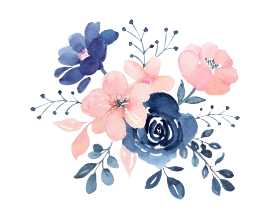

Resources
These reosurces were gatheres to help learn about flowers arrangements and alterntives to real flowers.

- Darcy Flowers
- City Flowers
- Luxury Columnist
- California Flower
Art Academy - Architecture Digest
Flower Arrangement
- Sarah Maker
- Tip Junkie
- The Spruce Crafts
- Cake Geek
- Artist Network